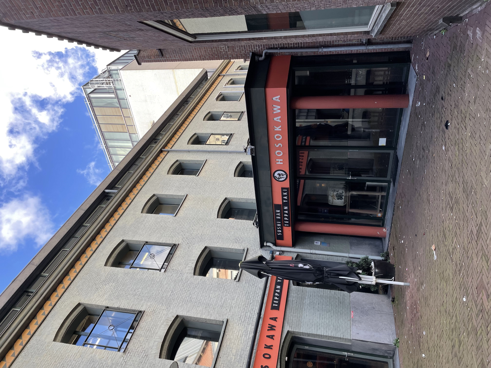
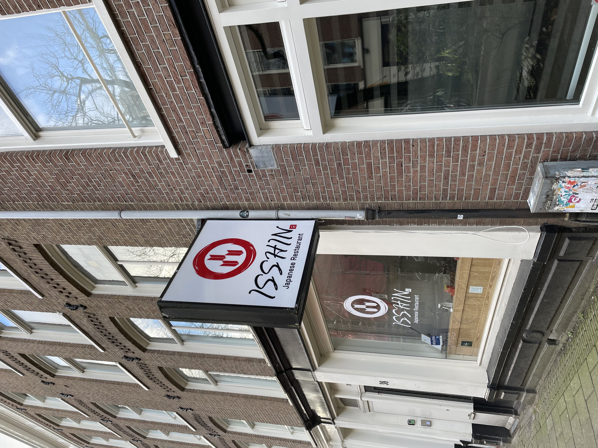
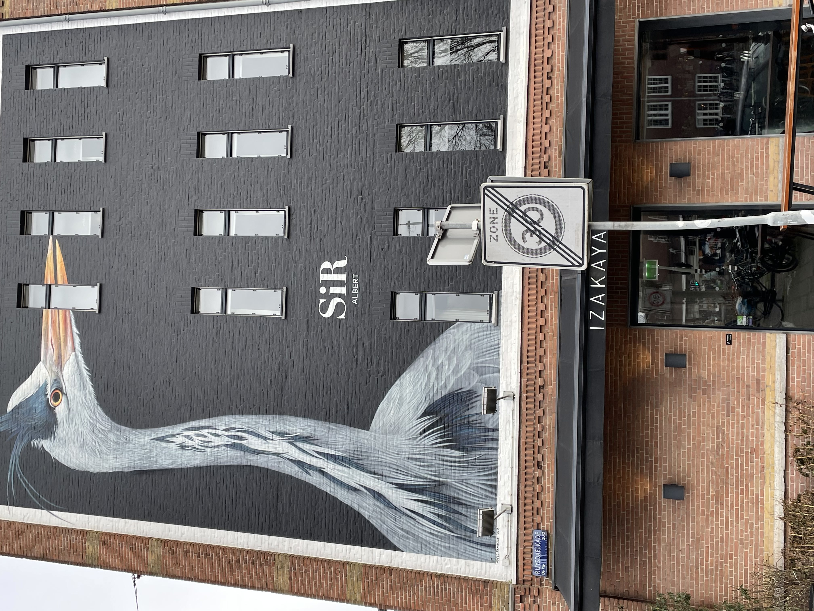
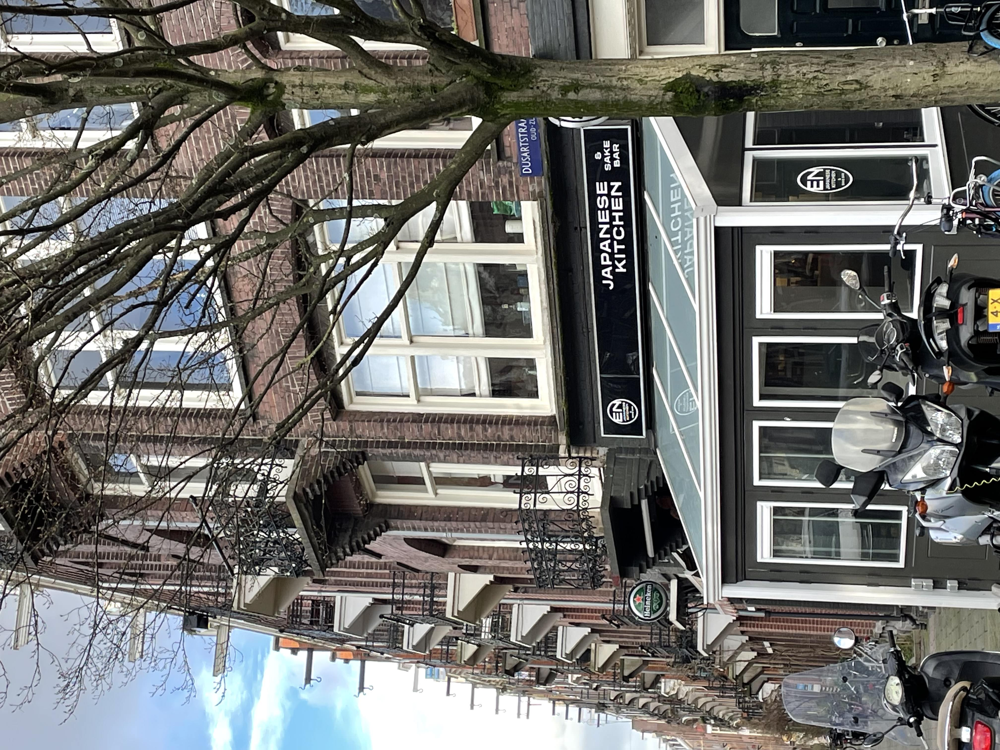

Japanese markets
Click on the IMAGES to learn more about the markets!
In Amsterdam we have a lot of Japanese markets. You can find them around the city, from west to south. Most of the store where opened around 1900.
Japanese restaurants




What you probably miss about Japan is food. I don't have to tell you about the ingredeble taste. So if you want to sit back and eat your favorite Japanese dishes, you shoud definitely try them out!